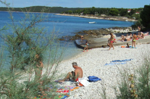
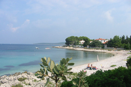

Pocukmarak
Pocukmarak is probably the biggest beach on the south side of the island. More...

Tratica
Tratica is a little gravelled beach on the south side of the island. More...

Sotorisce
Sotorisce is definately the biggest and the most popular Silba beach. More...